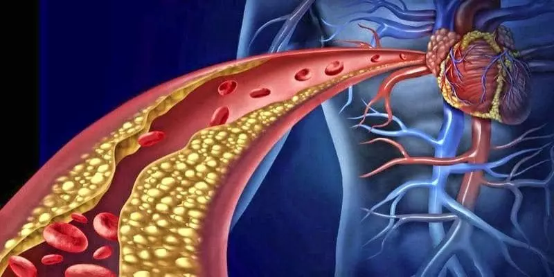
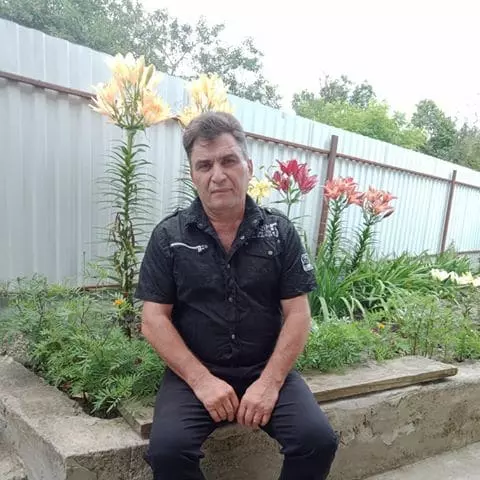
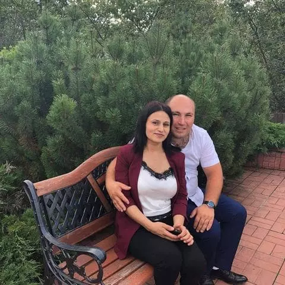
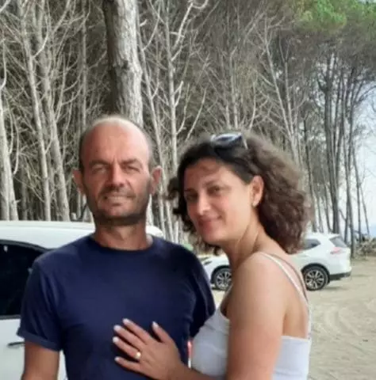

Отчеты по здоровью
Возраст – не помеха жизни! Академик разгадал секрет отличного здоровья и долголетия
21:48 ,
Знаменитый перуанский кардиолог, изобретатель, преподаватель, получивший множество национальных премий, Хесус Лобато Кандель изобрел инновационный метод лечения высокого кровяного давления. Хесус заявляет, что после такой чистки сосудов гипертония и многие другие якобы «неизлечимые» болезни исчезают. В настоящее время кардиолог подтверждает свои заявления.
Хесус утверждает, что секрет долголетия заключается в кровеносных сосудах. Если они чистые и здоровые, можно легко продлить жизнь на 15-20 лет!
Наш корреспондент смогу взять интервью у господина Хесуса Лобато Кандель, который подробно описал свою технику очистки сосудов и продления жизни.
Наш корреспондент смогу взять интервью у господина Хесуса Лобато Кандель, который подробно описал свою технику очистки сосудов и продления жизни.
- Хесус, Вы не раз утверждали, что чистые сосуды – основа здоровья. Почему Вы так считаете?
Все знают, что высокое кровяное давление. Инсульт и инфаркт – это результат «загрязнения» кровяных сосудов холестерином. Сердечно-сосудистые заболевания. Однако немногие понимают, что это только вершина айсберга. «Грязные» сосуды отвечают за 9 из каждых 10 хронических якобы неизлечимых болезней.
А что такое забитые сосуды? Представьте себе трубы, полные ржавчины. Что происходит в конце концов? В результате давление воды увеличивается, и сама вода становится плохой. То же самое происходит с кровеносными сосудами. Когда в них накапливается холестерин и другие вещества, увеличивается давление (грязные сосуды – главная причина гипертонии!), в самой крови появляются загрязнения, кровоснабжение не то, каким должно было быть. В результате страдают все органы и системы нашего организма. В конце концов, даже кожа – это система.

Вот как постепенно забиваются сосуды. Если вы их никогда не чистили и вам больше 40 лет, ваши сосуды очень загрязнены. Скоро это повлияет на ваше здоровье, если еще не повлияло.
- Какой-либо симптом может указывать на то что сосуды загрязнены?
Да, конечно. Основные симптомы:
- Мигрени
- Ухудшение памяти
- Хроническая усталость
- Бессонница
- Интимные проблемы
- Расстройства зрения и слуха
- Гипертония
- Нехватка воздуха и стенокардия
- Бледная кожа ног
- Боль в мышцах и суставах
Таким образом, сосуды загрязняются очень быстро, в особенности у пожилых. Для этого не обязательно есть гамбургеры или картошку фри каждый день. Достаточно есть сосиску или яичницу, чтобы некоторое количество холестерина отложилось на сосудах. Со временем загрязнения накапливаются.
Хесус, скажите, пожалуйста, Вы всегда утверждаете, что кровеносные сосуды отвечают за 90% здоровья организма. Почему?
Кровеносные сосуды – это не просто трубки, по которым идет кровь. Это уникальный и сложный орган, разрушение которого немедленно приводит к страданиям.
1) Больные сосуды ног провоцируют варикоз, постоянное вздутие и вечную тяжесть в ногах, ощущение холода или невыносимого жжения в ногах. Трещины в пятках. Плохое кровообращение означает, что нет защиты от бактерий, и, соответственно, грибов. Ногти становятся толстыми и длинными.
2. При закупорке сосудов, питающих печень, появляется гепатит. Ощущение горечи во рту. После употребления жирной пищи появляется горькая отрыжка.
3. Ослабленные и забитые сосуды суставов – причина сухих зрящей. Появляется боль в суставах, остеохондроз, грыжи.
4. Кровеносные сосуды глаз приводят к тому, что зрение ухудшается, появляются волны и мушки в глазах. Появляется катаракта. Покраснение глаз, которое мы часто объясняем усталостью, на самом деле это микрокровоизлияния, разрыв самых мелких капилляров глаз.
5. Мозговое кровообращение становится сложным: вы чувствуете головокружение, появляется звон в ушах, память ослабевает. Вы уже знаете такое, идете на кухню, а, придя туда, забываете зачем. Или известное слово часто появляется в вашем сознании, но вы не помните его. Все эти признаки указывают на ухудшение состояния сосудов головного мозга.
И, конечно же, королева сосудистых заболеваний, ее Величество Гипертония. Гипертония – мать инсульта и сестра инфаркта.
Лишний вес, например, тесно связан с сосудами. Полные холестерина сосуды приводят к тому, что органы умирают от голода. потому что кровяные сосуды не могут поставить им необходимое количество питательных веществ. Вот почему мозг подает сигнал: нужно поесть. И так несколько раз.
Из-за этого возникает постоянное желание что-то пожевать, поесть сладкого и жирного: организму нужны калории.
Когда мои коллеги говорят своим пациентам: "У вас высокое кровяное давление из-за лишнего веса ", они путают причину и следствие. Не гипертония причина лишнего веса, а лишний вес вызван гипертонией.
Тем не менее, даже при отсутствии этих симптомов очистка сосудов должна производиться по крайней мере один раз в 5 лет после того как вам исполнилось 30. В таком случае вы будете очень здоровыми.
- Вы можете открыть секрет очистки сосудов?
Для безопасной очистки сосудов я знаю только одно средство с безупречной репутацией: Cardiofort. Он продлевает жизнь на 15-20 лет, придает энергии и расслабляет вместо страданий и потери радости жизни.
Он безопасен как травяной чай. А что касается эффективности, занимает второе место после хирургической очистки кровеносных сосудов: стент. Но, в отличие от хирургического вмешательства, не имеет побочных эффектов и не провоцирует осложнения. Процедура помогает очистить все сосуды организма. От больших и массивных артерий до самых маленьких и тонких.
Загрязнения, накапливаемые годами, исчезают после 1,5-2 месяцев регулярного приема
Cardiofort.

После 1,5 месяцев Cardiofort растворяет и удаляет 4 кг холестериновых бляшек. Растворяет 900 г - 1 кг тромбоцитной массы и вымывает 350-400 г кальциноза.
Вместе с тем, исчезают головные боли и шум в ушах. Мозг, правильно питаемый по чистым сосудам, работает со скоростью суперкомпьютера. Мысли четкие и ясные.
Чувства становятся более яркими, слышатся приятные звуки, на которые мы раньше не обращали внимания. Улучшается слух, даже возможно разобрать спокойный разговор в другой комнате.
Запахи принимают новые цвета. Забитый нос, выделения из носа и аллергии исчезают. Бронхи восстанавливаются. Дыхание свободное и равномерное. Свежий воздух наполняет легкие, переносится по организму приятными волнами. И приходит ощущение легкой эйфории.
Ароматы становятся яркими и насыщенными. Обычная еда – это необычное удовольствие. Начинаешь есть меньше и больше насыщаться. Уже нет постоянного желания есть сладкое и жирное.
Это потрясающе. На самом деле я в первый раз услышал о Cardiofort, хотя наслышан о нутрицевтиках. В Японии и Израиле их официально признали преимущественным способом лечения. А в Перу все еще не доверяют таким средствам.
Позвольте рассказать вам поучительную историю о недоверии.
В 1928 году был изобретен первый антибиотик, пенициллин. Он легко вылечивал дизентерию и тиф, от которых на тот момент люди умирали.
Но люди по большей части не верили, что это может помочь, поскольку уже 1000 раз обожглись на попытках вылечиться. Те, кто обжегся 1000 раз и не имел страха, от попытки сделать это на 1001 раз излечились. И те, кто сдался со словами «еще одно чудодейственное снадобье, которое не поможет», умерли, хотя лекарство было у них прямо перед носом.
Так же, как в свое время пенициллин помог вылечить преобладающие на тот момент болезни: дизентерию, тиф, легочную чуму, так со временем и Cardiofort покончит с заболеваниями сосудов. Уже сделаны первые шаги, в Японии, Канаде, Корее, Швейцарии и Израиле, приняты законы по очистке сосудов нутрицевтиками, а не лекарствами.
В Перу Cardiofort официально выписывается только в одной клинике. В той самой, которую посещает наша элита: министры, депутаты, знаменитости и другие известные личности. Лечение там производится по израильским протоколам и указания нашего министра здравоохранения для них не важны. Вот почему пациенты получают результат, а не втягиваются в бесконечный процесс.
Наши сомнения коварны, из-за них мы теряем многое из того, чего могли бы добиться, т.к. боимся это сделать.
Для остальной части нашего населения Министерство здравоохранения предлагает лечение с помощью химических веществ, разрабатываемых на фабриках, принадлежащих той самой элите.
Представим, что я покупаю Cardiofort, открываю упаковку... Что же происходит потом? Как работает Cardiofort?
После того как капли попадает в воду, начинается настоящий естественный лабораторный процесс. Капли вступает в реакцию с водой и начинается процесс окисления натуральных экстрактов Cardiofort.
Насытившись кислородом, медицинские экстракты получают эффект перекиси водорода – окисления.
Молекулы Cardiofort - это маленькие кислородные бомбы. Холестериновые бляшки взрываются в ваших сосудах и кровоток становится свободным.
В США Cardiofort был назван «Чистильщиком сосудов». Это с большой точностью отражает его суть.
Кроме того, состав капель способствует немедленному всасыванию живых частиц. Экстракты, насыщенные кислородом, легко впитываются стенками пищевода. Вот почему
Cardiofort не провоцирует кислотность в желудке, горечь во рту, отрыжку, не раздражает кишечник и защищает желудок.
Также хотелось бы отметить, что это лекарство не содержит химии, в нем только высококонцентрированные экстракты полезных растений для очистки сосудов, и поэтому он не только не влияет негативно на организм, но и очень полезен.
Ко мне на консультацию постоянно приходят пациенты по поводу очистки кровеносных сосудов. В последнее время я им рекомендую только этот препарат. Он всем очень хорошо помогает.
Есть официальная статистика на веб-сайте Института исследований чистоты кровеносных сосудов, связанная с результатами клинических исследований. В целом около 2000 пациентов приняли участие в исследовании. Все они принимали курс Cardiofort.
Скажите, насколько известно, Cardiofort исчез из большинства аптек? Почему?
Причина конфликта – в стяжательстве аптечных сетей, которые потребовали тысячи евро от производителя Cardiofort. С большой маржой прибыли (стоимость курса Cardiofort в некоторых аптеках Перу достигла 200 евро) фармацевты хотели навязать дополнительный тариф производителя.
Представители аптек заметили, что такая маржа прибыли позволила бы им выжить. Кроме того, после очистки сосудов этим порошком, не придется принимать лекарства, которые до этого постоянно принимались. Люди перестают принимать уже не нужные средства от давления и обезболивающие. Значительно уменьшается потребление медикаментов от астмы и диабета. И это приводит к потерям аптек. Вот почему требуют установления самой возможно высокой цены на Cardiofort .
В результате, производитель Cardiofort разорвал контакты со всеми аптеками и теперь занимается только продажами онлайн. В целом, это правильно. Подумайте хорошенько: если не нужно платить за аренду нежилого помещения. не нужно платить «дань» аптекам. Вот почему Cardiofort теперь доступен по специальному предложению.
Льготная программа «Здоровье людей»
Наш Институт вместе с Национальным центром медицинских исследований сердечно-сосудистой хирургии и производитель Cardiofort запустили льготную программу в рамках проекта телемедицины (медицина онлайн).
Что необходимо для участия в программе?
Cardiofort не продается в аптеках! Вот почему все те, кто желает получить Cardiofort со скидкой до 50% могут поучаствовать в нашей лотерее. Впоследствии с ними свяжутся наши квалифицированные специалисты для разработки индивидуального плата лечения препаратом "Cardiofort". Неважно, где вы живете, мы может отправить продукт в любой регион Перу. Пересылка осуществляется срочным отправлением прямо к вам домой.
Мы запустили масштабную рекламную кампанию во всех СМИ для привлечения всеобщего внимания к этому продукту и обещаем разыграть 200 упаковок " Cardiofort"
Все могут принять участие в этом розыгрыше и получить главную премию: скидку -50%! Цель этой промо акции для Перу – привлечь внимание людей к этому продукту.
Сколько продлится программа скидок?
До
включительно или пока не будет вручена последняя единица Cardiofort. И все это несмотря на отсутствие рекламы на радио и телевидении. Люди передают информацию, рекомендуют препарат родным и знакомым. Для нас было неожиданностью то, что информация о льготной программе начала распространяется так быстро.
В связи с этим мы рекомендуем заказать Cardiofort как можно быстрее. Лекарство, принимаемое с большими паузами, не даст эффекта.
Розыгрыш уже идет!
Помните, что специальная акция длится до:
ВНИМАНИЕ!
Наш портал предлагает дополнительную скидку для Cardiofort. Попытайте счастья и нажмите на кнопку SPIN. Если вам выпадет удача, сможете заказать продукт еще дешевле. Удачи!
SPIN
Поздравляю!
Вы выиграли наш главный приз: Кардиофорт со скидкой -50%!
Вы можете купить его за 39 €
Спешите оформить заказ до того, как скидка перейдет к следующему читателю, ваше уникальное предложение заканчивается:
10 : 00
Поздравляю!
Вы выиграли наш главный приз: Кардиофорт со скидкой -50%!
КОММЕНТАРИИ:
Оливия
Три месяца назад впервые услышала о препарате и сразу же заказала. У меня были ужасные проблемы с давлением. И после первого дня применения давление не поднялось больше ни разу. Я просто наслаждаюсь жизнью.
Луиса
Я тоже купила для бабушки, у которой всегда были проблемы с давлением. Очень сомнительно, что она закажет что-то по сети, даже по телефону. Вот почему я сама ей это купила. Должна сказать, что помогло на 100%, хотя проблемы были старые и достаточно большие, она принимала сильные лекарства несколько лет.

Хосе Ромейро
Это просто волшебно, да. Заказал Cardiofort, как только прочитал о нем. Жаль, что не знал об этом 5 лет назад, долго мучился болями, но теперь я жив и здоров! Я открыт миру! Большое спасибо.

Мануэла
Только что сделала заказ для двух циклов лечения сразу. В нашей семье по женской линии у всех проблемы с давлением. И умирают в большинстве случаев именно из-за инфарктов.

Елена Морено
Заказала своей сестре два месяца назад. Она сильно страдала от давления. Если бы вы знали, как она меня потом благодарила, за риск и покупку средства.
Ана
Я восхищаюсь этими паразитами! Все всегда им должны! Когда я узнала. Что мне нужен Cardiofort, не ждала бесплатных программ! Я одолжила денег и купила его! А эти все ждут бесплатно! Какой стыд! Я бы со стыда умерла такое писать!
Алисия
После лечения я чувствую себя намного лучше, как будто бы стала моложе. Все это отразилось и на моей внешности, выгляжу моложе и здоровее.

Марибель Санчес
Не поверите, но у меня была такая же проблема, я потеряла всякий интерес к жизни, уже была в отчаянии и тут этот Cardiofort, чудесное средство, рекомендую всем.

Кармен Монтеро
Все подтверждаю! Cardiofort отличное средство. У меня проблемы с гипертонией уже 5 лет или больше. Ничего не помогало. Как только начала принимать Cardiofort, проблема полностью решилась за 3 недели. После этого не было проблем с давлением больше ни разу! Всем рекомендую попробовать. К тому же, по такой цене!

Энрике Перес
Ужасная правда о наших больницах и аптеках. Теперь все ясно, потому что на лечение тратятся все деньги, а результаты не ощущаются. Медики коррумпированы.
Антонио Гарсиа
У меня также есть позитивный опыт использования Cardiofort. Если бы не наешл это средство, возможно, меня бы уже не было в живых. В целом, я вам его очень рекомендую!
Селиа
Слышала об этом методе очистки кровеносных сосудов, но еще не пробовала. Думаю, пришло время попробовать.
Лола Фернандес
Рискнула и не жалею. Если у вас проблемы с сосудами, рекомендую. У меня не было побочных эффектов, результаты мне понравились

Хуана
У меня высокий холестерин, мне прописали ПИТАВАСТАТИН (ЛИВАЗО). В течение недели не могла даже пить, все лимфатические узлы были надуты, в особенности вокруг шеи, не могла пошевелить головой. Кроме того, ухудшилось зрение. Именно после 4 дней приема появилась дымка в глазах. Врач сказал, что это из-за статинов, побочный эффект. Прописал мне другое лекарство КРЕСТОР (РОСУВАСТАТИН), но я боюсь, не принимал его. Теперь думаю принимать Cardiofort, его натуральный состав не должен давать побочных эффектов? Возможно, у меня пока есть время.
Себастьян Коль
Cardiofort - это важнейшее средство от холестерина! После его приема у меня не было побочных эффектов. Их действительно нет, все натуральное. Возможно, появляется аллергия, но это вряд ли.
Исабель
Лучшее средство от холестерина – ДИЕТА!

Сара
Диета помогла бы избежать образования новых бляшек, но не повлияла бы на старые. Поверьте мне, я уже много раз прошла эту историю с диетами.
Габриэла Лима
У меня был холестерин 6,8, для меня это очень много. У меня были постоянные головокружения, скачки давления и плохое самочувствие. И после 2 месяцев результат был 3.4. Самое важное, конечно же, это мое душевное состояние! Теперь могу не проверяться. Я обратила внимание на отличие, что такое кровь «без жира», когда голова начала хорошо работать. Те, кто меня знает, говорят, что даже произношение у меня улучшилось. Все изменилось.
Нурия Лосано
Спасибо за информацию! Хочу попробовать, гипертония мне не дает жить…
Клара Муньос
Я согласна с каждым словом: Cardiofort потрясающий, это одно из самых экономичных и эффективных средств! В сравнении с другими, в 10 раз дешевле и результаты длятся в 10 раз больше и без побочных эффектов.